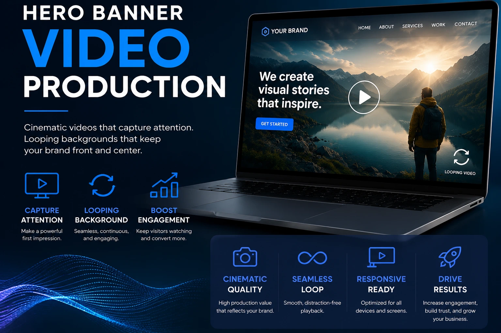
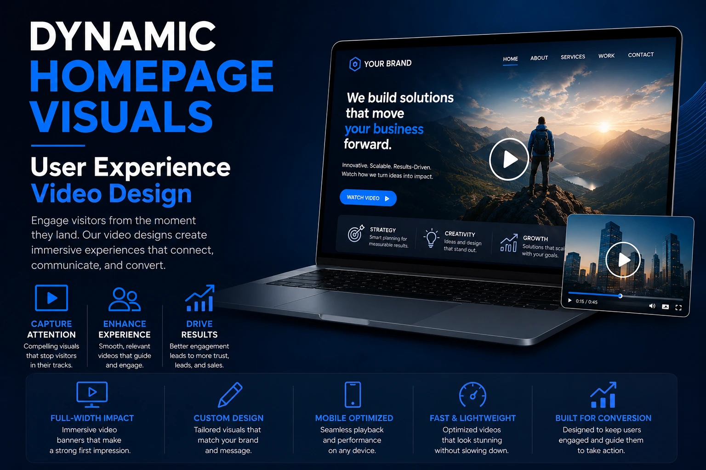

How Hero Banner Videography Prevents Instant Website Bounce Rates
The Three-Second Window Where Bounce Decisions Are Made
Every visitor who lands on a website — from a paid ad, an organic search result, a social media link, or a direct referral — makes a stay-or-leave decision within three seconds of arrival. This decision is not made by reading the headline, evaluating the brand's claims, or assessing the product's value proposition. It is made by the visual and emotional impression of the first screenful of the page — before any text is consciously processed.
A static image hero banner communicates one thing: a single, frozen moment of the brand's visual identity. A professionally produced website hero banner video communicates something categorically different: a world. Movement, atmosphere, quality, energy, brand character — all communicated in the first three seconds before the visitor has read a single word. The difference in bounce rate between a static hero and a well-produced looping landing page background video is the difference between a visitor whose visual attention system was given a reason to stay and one whose was not.
This guide covers the specific production approach, technical implementation, and landing page visual optimization strategy for website hero banner videography — and how to do it in a way that reduces bounce rates, improves time on page, and delivers measurable conversion rate optimization visuals without compromising Core Web Vitals or page load performance.
The Neuroscience Behind Why Moving Website Headers Hold Attention
The effectiveness of moving website headers in reducing bounce rates is not a design preference — it is grounded in the visual attention system's prioritisation of movement as a relevance signal. The human visual cortex has a dedicated subsystem — the magnocellular pathway — that processes movement independently from colour and detail processing, and that responds to movement in the visual field before conscious attention is directed to the stimulus.
In practical terms: a visitor's brain registers the movement in a looping landing page background video before they have consciously decided to look at it. The movement detection happens involuntarily, triggering the attention system to focus on the source of movement, evaluate its significance, and — if the visual quality and emotional register of the moving content is appropriate — extend the visitor's engagement with the page.
This is why dynamic homepage visuals in the hero section produce measurably lower bounce rates than static equivalents — not because video is inherently more valuable than photography, but because the visual attention system responds to movement at a neurological level that precedes and influences the conscious evaluation of whether to engage with the page.
Involuntary Attention Capture
The magnocellular visual pathway registers movement before conscious attention is directed. A looping hero video captures the visitor's attention at the neurological level before they have made a conscious engagement decision — extending the evaluation window that determines whether they stay or bounce.
Brand Quality Signal
A professionally produced hero banner video communicates brand quality and production investment in the first three seconds — establishing the brand's visual standard before any product or pricing information is processed. This quality signal reduces the likelihood that the visitor will categorise the brand as low-quality and leave before evaluating the offering.
Time-on-Page Extension
The time a visitor spends watching a hero video — even passively, as a background element — is time during which the overlaid headline and CTA are being processed. The video's movement keeps the visitor visually engaged with the page while the brand's value proposition has the opportunity to register at the conscious level.
Emotional Register Establishment
A hero video establishes the emotional register of the brand experience — warm and aspirational, energetic and dynamic, clean and authoritative — before any text communicates the same information. This emotional priming improves the effectiveness of every subsequent element on the page.

Production Requirements for Effective Hero Banner Videography
Website hero banner videography has specific production requirements that differ from standard video content production — because the hero banner video is not a standalone piece of content but a background element that must support, not compete with, the overlaid text, branding, and call-to-action elements that convert visitors.
The production requirements for a hero banner video that performs as a background:
- Compositional space for overlaid elements. A hero banner video that fills the frame with visually complex, high-contrast action leaves no compositional space for the headline, subheadline, and CTA button that must sit above it. The composition of the hero banner video should be planned with the overlay layout in mind — typically positioning the visually complex elements of the video to one side or the upper third, leaving a clean, darker, or lower-contrast area where the text overlay will sit with legibility.
- Controlled visual complexity to prevent competition with text. A hero banner video with rapid cuts, high visual contrast, and complex motion creates a visual environment in which overlaid text is illegible without a strong overlay treatment. The video should use slow, deliberate movement — a gentle camera pan, a slow motion product sequence, a softly moving lifestyle scene — that creates visual richness without the rapid visual complexity that interferes with text legibility.
- Consistent tonal values for text contrast. The hero banner video should maintain consistent brightness and tonal values across the area where text overlays will be positioned. A video that shifts between bright and dark areas beneath the text overlay creates legibility problems that require increasingly heavy text treatment solutions. A post-production colour grade that stabilises the tonal range of the hero area — keeping it consistently dark or consistently mid-tone — resolves this problem at the production level rather than in the web design.
- Seamless loop point. The hero banner video must loop seamlessly — the transition between the last frame and the first frame must be imperceptible. This requires either: matching the end frame to the start frame precisely so the cut is invisible; using a crossfade transition at the loop point; or building the video around a naturally cyclical motion (a slow zoom that returns to its starting position, a camera rotation that completes its arc). Loop points that are visible to the visitor create a jarring, unpolished impression that undermines the quality signal the video is intended to communicate.
- 4K source footage downsampled to 1080p for delivery. Shooting the hero banner source footage in 4K and downsampling to 1080p for web delivery provides significantly better image quality than shooting natively at 1080p — because the downsampling process is essentially a form of sharpening and noise reduction that produces crisper, cleaner output. The delivered file for the web should be 1080p (1920 × 1080 pixels) rather than 4K, which would be prohibitively large for web delivery.
E-commerce Web Banner Production: Category-Specific Content Strategies
E-commerce web banner production for hero sections requires category-specific content strategies — the hero banner video that performs best for a fashion brand is fundamentally different from the one that performs best for a B2B SaaS company, which is different again from the one that performs best for a food and beverage brand or a Madurai textile retailer.
The category-specific content approach for e-commerce web banner production:
- Fashion and apparel: Fabric in motion — a garment being worn and moving naturally, a textile being handled, a saree being draped. The motion communicates the qualities that still photography cannot: weight, drape, softness, movement. Slow motion at 50% to 60% of real-time pace produces the elegant, deliberate movement that communicates premium quality. For Indian textile brands, the specific motion of a Kanjivaram silk catching and releasing light as it moves is one of the most quality- communicating visual sequences available in any product category.
- Food and beverage: The preparation, pour, or serving moment that communicates appetite appeal and sensory richness. Steam rising from a fresh dish, a sauce being poured over a plated meal, chai being strained into a glass — these motion sequences communicate warmth, freshness, and flavour in a way that the most well-composed still photograph cannot. The motion is the appetite signal.
- Technology and SaaS: A clean office or workspace environment in slow, deliberate motion — team members at work, a product interface in use, a facility in operation — that communicates professional credibility and operational quality. For B2B brands, the hero banner video is not about product appeal; it is about brand credibility and the reassurance of operational scale and seriousness.
- Jewellery and luxury goods: Light catching and moving across the product surface — the way a diamond catches light from different angles, the way polished metal shifts in brilliance as the camera moves around it. These motion sequences communicate the specific quality signals of premium materials — the properties of light interaction that distinguish genuine gemstones and precious metals from lower-quality alternatives — in a way that static photography simply cannot.
- Lifestyle and wellness: A curated environment in slow, ambient motion — natural light moving through a space, gentle movement in a wellness or hospitality environment, a lifestyle scene that communicates calm aspiration rather than product urgency. These hero videos communicate the brand's world and the emotional experience of belonging to it — which is the primary purchase motivation for lifestyle brand customers.
User Experience Video Design: Making the Hero Banner Work for Conversion
User experience video design for hero banners is the discipline of integrating the video background with the page's conversion elements — headline, subtext, and CTA — in a way that the video enhances rather than competes with the conversion pathway. The hero banner video that reduces bounce rates but reduces conversion rate is not a successful hero banner video.
The user experience video design principles for hero banner integration:
Text Legibility Treatment
- Dark overlay (20 to 40% opacity black) over the full video for consistent text contrast
- Text positioned in the naturally darker or lower-contrast areas of the video composition
- White or very light text on dark video backgrounds for maximum contrast ratio
- Text shadow or subtle outline on headline text for guaranteed legibility across all video frames
CTA Button Positioning
- CTA button positioned in clear visual separation from the video's primary motion element
- High-contrast button colour that stands apart from the video's colour palette
- Sufficient button padding and size for mobile tap targets (minimum 48 × 48px)
- Static button positioning — not animated — to avoid competing with the video motion
Mobile Responsiveness
- Separate mobile video crop planned during production — the horizontal 16:9 hero video does not simply scale to mobile; a vertical or square crop must be available
- Or: replace the video with a static poster image on mobile to prioritise load speed
- Test the hero section on multiple mobile devices before launch — the video's composition, the text legibility, and the CTA accessibility all behave differently on mobile
- Ensure the autoplay video does not extend beyond the hero section on mobile scroll

Landing Page Visual Optimization: The Technical Implementation Checklist
Landing page visual optimization for hero banner video requires correct technical implementation to deliver the performance benefits without the Core Web Vitals penalties that poorly implemented video can produce. The complete technical implementation checklist:
-
Use the poster attribute on the video element. The
posterattribute specifies a static image that displays while the video is loading — preventing the blank white area that appears during video buffer time, which causes significant layout shift (CLS) and visual quality degradation. The poster image should be a WebP or JPEG version of the video's first frame, optimised to under 100KB.
Example:<video autoplay muted loop playsinline poster="hero-poster.webp"> -
Serve WebM with MP4 fallback. WebM provides 30 to 50% smaller
file sizes than equivalent MP4 at the same quality level. Serve WebM as the primary
format with an MP4 source as fallback for browsers that do not support WebM.
Example:<video autoplay muted loop playsinline poster="hero-poster.webp"> <source src="hero.webm" type="video/webm"> <source src="hero.mp4" type="video/mp4"> </video>
- File size targets for hero banner videos. The hero banner video should be compressed to under 3MB for desktop delivery and under 1.5MB for mobile delivery. Files above these targets will cause perceptible load delay on Indian 4G connections — which is where a significant proportion of website traffic originates. Use Handbrake or FFmpeg for compression, targeting a CRF value of 28 to 32 for WebM and 23 to 28 for H.264 MP4.
- Replace video with static image on mobile. For brands whose primary mobile traffic is on 4G connections, replacing the hero banner video with a static poster image on mobile devices — using a CSS media query or a JavaScript Intersection Observer — eliminates the file size burden of the video from mobile page loads entirely. A well-chosen static image at this breakpoint maintains visual quality while significantly improving mobile LCP scores and overall page load performance.
-
Preload set to 'none' or 'metadata' only. Setting
preload="none"prevents the browser from downloading the video file before the visitor has scrolled to the hero section. For hero sections that are immediately above the fold on page load,preload="metadata"allows the browser to download the video's metadata (duration, dimensions) without downloading the full file — improving the initial page load while allowing the video to begin buffering quickly when the page loads. -
Implement reduced motion accessibility. Include a CSS media query
for
@media (prefers-reduced-motion: reduce)that pauses the hero video or replaces it with the static poster for visitors who have enabled the reduced motion accessibility preference. This is both an accessibility requirement and an expected web standard.
Example:@media (prefers-reduced-motion: reduce) { .hero-video { display: none; } .hero-poster { display: block; } }
Dynamic Homepage Visuals: Planning the Full Above-the-Fold Experience
Dynamic homepage visuals work most effectively when the hero banner video is planned as part of a complete above-the-fold experience — not just as a background element applied to an existing page layout. The most conversion-effective hero sections are designed as integrated visual environments where the video background, the headline text, the subtext, and the CTA are planned together as a single compositional unit.
The planning framework for integrated dynamic homepage visuals:
- Define the hero section's single conversion objective. A hero section with two CTAs — "Shop Now" and "Learn More" — is a hero section divided against itself. Define the single most important action you want a new visitor to take within the first fifteen seconds of their visit, and design the entire hero section — including the video's visual direction — to support that single objective.
- Brief the video production with the headline in mind. The video's composition, colour palette, and motion style should be planned to support the specific headline text that will sit above it — not produced independently and then fitted with a headline. The production brief for the hero banner video should include the finalised headline text and the intended text position so the videographer can compose the shot accordingly.
- Plan the transition from above-the-fold to below-the-fold. The hero section does not exist in isolation — it is the beginning of a page journey that continues below the fold. The visual treatment of the hero banner video should establish an aesthetic register that the page design below the fold continues — consistent colour palette, consistent visual quality, consistent brand tone. A hero section that feels disconnected from the rest of the page creates a visual discontinuity that the visitor's brain registers as a quality inconsistency.
- A/B test static versus video hero to confirm the performance benefit. The bounce rate reduction of a hero banner video is real and measurable — but it varies significantly by brand, audience, and page context. The most rigorous approach to conversion rate optimization visuals is to A/B test the hero section with and without the video — measuring bounce rate, time on page, and conversion rate across the same traffic — before committing the video to permanent deployment. Most brands will see a measurable improvement; some specific contexts will not, and knowing this before committing the production investment to all future pages is valuable.
Website Visual Production: Integrating the Hero Banner Into the Complete Visual System
The hero banner video does not exist in isolation — it is one component of a complete website visual production strategy that includes the product photography, the lifestyle imagery, the team photography, and the brand video content that populate the pages below the hero. The most effective websites treat all of these visual elements as components of a single, coherent visual identity — planned with consistent colour treatment, consistent compositional language, and consistent quality standards across every touchpoint.
A brand that invests in a high-quality hero banner video and then populates the product pages below it with inconsistent, lower-quality static photography creates a visual discontinuity that undermines the trust signal the hero video established. The bounce rate benefit of the hero video is maximised when the visual quality standard it establishes is maintained throughout the page experience.
Conclusion
Website hero banner videography is the landing page visual optimization investment with the most immediate and measurable impact on bounce rate — because it addresses the three-second stay-or-leave decision at the neurological level before any conscious brand evaluation has taken place. A professionally produced looping landing page background video, technically implemented without Core Web Vitals penalties, and visually integrated with the page's conversion elements as a coherent user experience video design, is the single most commercially effective visual upgrade available to any brand whose homepage currently uses a static hero image.
The brands that have made this upgrade — that replaced the static hero with a well-produced, technically optimised looping video — have discovered that the bounce rate improvement, the time-on-page improvement, and the conversion rate improvement that dynamic homepage visuals deliver compound across every traffic source that lands on the page. The visual investment pays on every visit from every channel.
At The PhD Ads, we produce website hero banner videography for Indian brands across every category — looping background video production, e-commerce web banner production, and complete website visual production strategy from concept to technically optimised delivery, built for brands ready to reduce bounce rates and improve conversion with professional motion.
Key Topics
Ready to Reduce Bounce Rates with Hero Banner Videography?
At The PhD Ads, we produce website hero banner videography and looping landing page background videos for Indian brands — from concept and production through technical optimisation for Core Web Vitals and delivery as browser-ready WebM and MP4 files, built for brands ready to stop the bounce.
Email: team@e2o.in